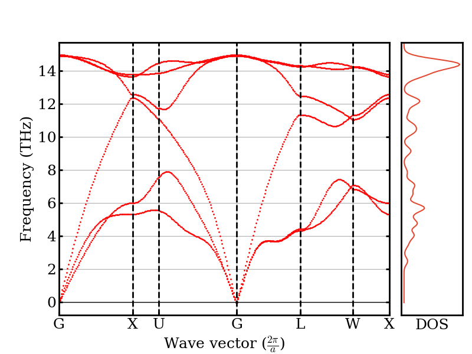
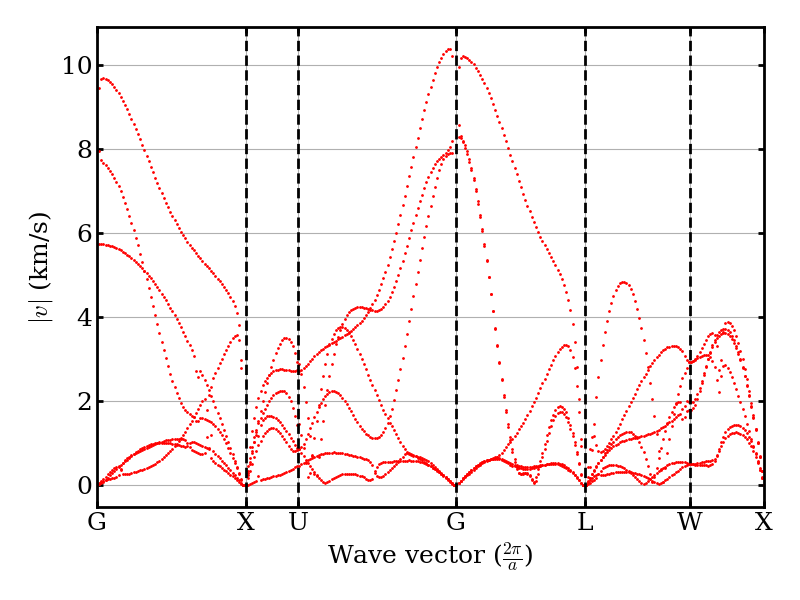
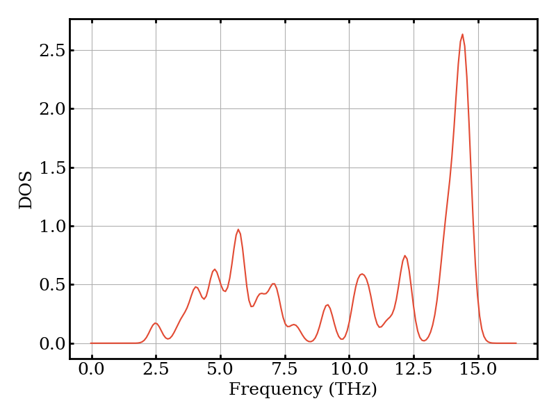
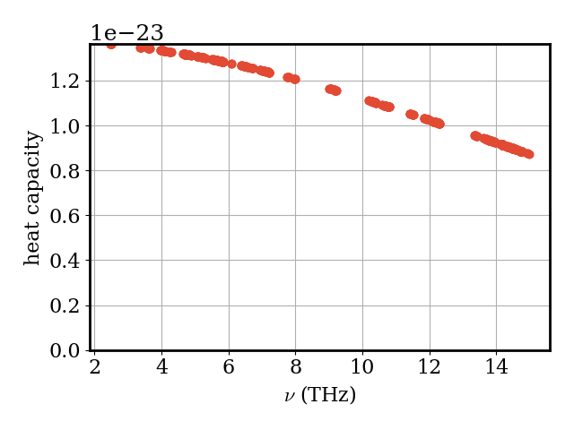
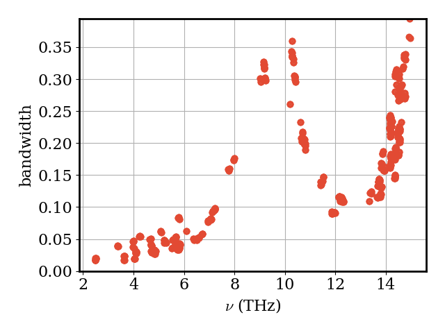
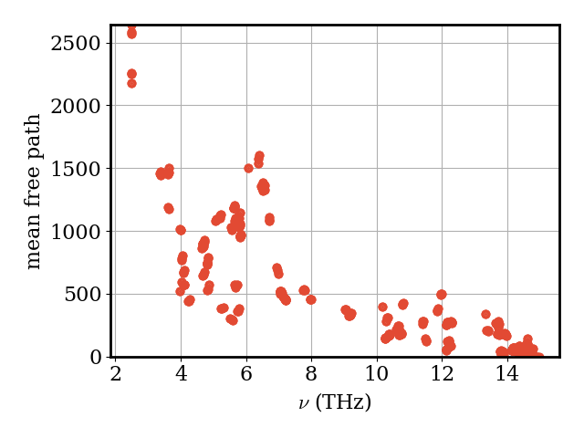
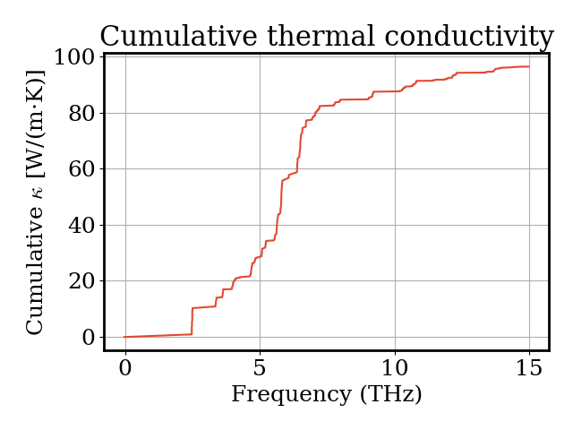

Note
Go to the end to download the full example code.
Thermal conductivity from the Boltzmann transport equation¶
- Authors:
Giuseppe Barbalinardo @gbarbalinardo
This recipe shows how to compute lattice thermal conductivity \(\kappa\) by solving the phonon Boltzmann transport equation (BTE) with kALDo and the PET-MAD universal machine-learning potential via the UPET calculator.
The workflow builds on two companion recipes:
Geometry relaxation with PET-MAD — structure relaxation with a universal MLIP.
Phonon dispersions with PET-MAD — harmonic phonon properties from second-order force constants.
Here we go one step further: we also compute third-order (anharmonic) force constants \(\Phi^{(3)}\), which describe phonon–phonon scattering, and solve the BTE to obtain the thermal conductivity tensor. A comprehensive study of thermal conductivity with universal MLIPs is presented in Barbalinardo et al. (2026). The theory and implementation of kALDo are described in Barbalinardo et al., J. Appl. Phys. 128, 135104 (2020).
We use silicon (diamond) as a test system. The experimental thermal conductivity of natural Si at 300 K is ~150 W/(m·K).
Note
The supercell and k-point grids used here are deliberately small so the recipe runs in CI in a few minutes. See the convergence discussion at the end for production-quality settings.
# sphinx_gallery_thumbnail_number = 7
Setup¶
We use the extra-small (XS) variant of
PET-MAD v1.5.0. For production
calculations, the S model (pet-mad-s) is recommended.
import matplotlib.pyplot as plt
import numpy as np
import chemiscope
from ase.build import bulk
from ase.constraints import FixSymmetry
from ase.filters import StrainFilter
from ase.optimize import BFGS
import kaldo.controllers.plotter as plotter
from kaldo.conductivity import Conductivity
from kaldo.forceconstants import ForceConstants
from kaldo.phonons import Phonons
from upet.calculator import UPETCalculator
plt.rcParams["figure.autolayout"] = True
DEVICE = "cpu"
calc = UPETCalculator(
model="pet-mad-xs",
device=DEVICE,
dtype="float32",
version="1.5.0",
)
Warning: You are sending unauthenticated requests to the HF Hub. Please set a HF_TOKEN to enable higher rate limits and faster downloads.
WARNING:huggingface_hub.utils._http:Warning: You are sending unauthenticated requests to the HF Hub. Please set a HF_TOKEN to enable higher rate limits and faster downloads.
Structure relaxation¶
We build a 2-atom Si primitive cell (diamond) and relax the lattice
parameter while preserving symmetry.
FixSymmetry prevents spurious symmetry-breaking that can arise with
unconstrained models, and StrainFilter allows the cell shape to relax
at zero internal stress (see also the geometry relaxation recipe).
atoms = bulk("Si", "diamond", a=5.43)
atoms.calc = calc
atoms.set_constraint(FixSymmetry(atoms))
sf = StrainFilter(atoms)
opt = BFGS(sf, logfile=None)
opt.run(fmax=1e-4)
atoms.set_constraint(None)
a_opt = atoms.cell.cellpar()[0]
print(f"Optimized lattice parameter: {a_opt:.3f} Å")
/home/runner/work/atomistic-cookbook/atomistic-cookbook/.nox/thermal-conductivity-bte/lib/python3.12/site-packages/metatomic_ase/_neighbors.py:78: UserWarning: `compute_requested_neighbors_from_options` is deprecated and will be removed in a future version. Please use `neighbor_lists_for_model` to get the calculators and call them directly.
vesin.metatomic.compute_requested_neighbors_from_options(
Optimized lattice parameter: 3.842 Å
Force constants¶
Thermal transport requires two sets of interatomic force constants (IFCs), both computed here by finite differences on a 3×3×3 supercell:
Second-order IFCs \(\Phi^{(2)}\) (harmonic): determine phonon frequencies and group velocities — the ingredients for ballistic (non-interacting) phonon transport. These are the same force constants used in the phonon-dispersion recipe.
Third-order IFCs \(\Phi^{(3)}\) (anharmonic): describe three-phonon scattering processes that limit the phonon mean free path and thus govern diffusive thermal transport.
In production, the second- and third-order supercells can be chosen independently; the third-order calculation is far more expensive because the number of independent displacements scales as \(O(N^2)\) rather than \(O(N)\).
supercell = np.array([3, 3, 3])
chemiscope.show(
[atoms.repeat(supercell)],
mode="structure",
settings=chemiscope.quick_settings(periodic=True),
)

forceconstants = ForceConstants(
atoms=atoms,
supercell=supercell,
third_supercell=supercell,
folder="fd_si/",
)
forceconstants.second.calculate(calc, delta_shift=3e-2)
forceconstants.third.calculate(calc, delta_shift=3e-2)
2026-05-04 15:17:50,886 - kaldo - INFO - Second order not found. Calculating.
INFO:kaldo:Second order not found. Calculating.
2026-05-04 15:17:50,886 - kaldo - INFO - Calculating second order potential derivatives, finite difference displacement: 3.000e-02 angstrom
INFO:kaldo:Calculating second order potential derivatives, finite difference displacement: 3.000e-02 angstrom
2026-05-04 15:17:51,506 - kaldo - INFO - Symmetry of Dynamical Matrix 0.0028956177023547053
INFO:kaldo:Symmetry of Dynamical Matrix 0.0028956177023547053
2026-05-04 15:17:51,507 - kaldo - INFO - fd_si/second stored
INFO:kaldo:fd_si/second stored
2026-05-04 15:17:51,560 - kaldo - INFO - Third order not found. Calculating.
INFO:kaldo:Third order not found. Calculating.
2026-05-04 15:17:51,560 - kaldo - INFO - Calculating third order potential derivatives, finite difference displacement: 3.000e-02 angstrom
INFO:kaldo:Calculating third order potential derivatives, finite difference displacement: 3.000e-02 angstrom
2026-05-04 15:21:08,200 - kaldo - INFO - total forces to calculate third : 972
INFO:kaldo:total forces to calculate third : 972
2026-05-04 15:21:08,200 - kaldo - INFO - forces calculated : 972
INFO:kaldo:forces calculated : 972
2026-05-04 15:21:08,200 - kaldo - INFO - forces skipped (outside distance threshold) : 0
INFO:kaldo:forces skipped (outside distance threshold) : 0
Harmonic phonon properties¶
We create a Phonons object on a 5×5×5 k-point mesh at 300 K and
inspect the harmonic (second-order) properties: the phonon band structure,
density of states, and mode heat capacities.
kpts = np.array([5, 5, 5])
temperature = 300 # K
phonons = Phonons(
forceconstants=forceconstants,
kpts=kpts,
is_classic=False,
temperature=temperature,
folder="ald_si/",
storage="memory",
)
The phonon dispersion shows the frequency of each phonon mode as a function of wave vector along high-symmetry directions. Silicon has 6 branches (3 acoustic + 3 optical) because the primitive cell contains 2 atoms.
plotter.plot_dispersion(phonons)


/home/runner/work/atomistic-cookbook/atomistic-cookbook/.nox/thermal-conductivity-bte/lib/python3.12/site-packages/kaldo/observables/harmonic_with_q.py:256: RuntimeWarning: invalid value encountered in sqrt
inverse_sqrt_freq = tf.cast(tf.convert_to_tensor(1 / np.sqrt(frequency)), tf.complex128)
/home/runner/work/atomistic-cookbook/atomistic-cookbook/.nox/thermal-conductivity-bte/lib/python3.12/site-packages/kaldo/controllers/plotter.py:593: UserWarning: This figure includes Axes that are not compatible with tight_layout, so results might be incorrect.
plt.savefig(folder + '/dispersion_dos.png', dpi=300, bbox_inches='tight')
The phonon density of states (DOS) gives the distribution of phonon frequencies. Peaks correspond to flat regions of the dispersion (van Hove singularities).
plotter.plot_dos(phonons)

The mode heat capacity \(C_\nu\) tells us how much each phonon mode \(\nu\) contributes to the total heat capacity at this temperature.
plotter.plot_vs_frequency(phonons, phonons.heat_capacity, "heat capacity")

Anharmonic properties and thermal conductivity¶
To obtain the lattice thermal conductivity we need the phonon
lifetimes (inverse bandwidths), which arise from three-phonon
scattering encoded in \(\Phi^{(3)}\). We solve the linearised BTE
using the direct-inversion method (method='inverse'); kALDo also
supports the relaxation-time approximation ('rta') and
self-consistent iteration ('sc').
conductivity = Conductivity(phonons=phonons, method="inverse", storage="memory")
The phonon linewidths (scattering rates) \(\Gamma_\nu\) quantify how strongly each mode is scattered by anharmonic interactions. Modes with larger linewidths have shorter lifetimes and carry less heat.
plotter.plot_vs_frequency(phonons, phonons.bandwidth, "bandwidth")

2026-05-04 15:21:12,680 - kaldo - INFO - _ps_gamma_and_gamma_tensor not found.
INFO:kaldo:_ps_gamma_and_gamma_tensor not found.
2026-05-04 15:21:12,793 - kaldo - INFO - Projection started
INFO:kaldo:Projection started
/home/runner/work/atomistic-cookbook/atomistic-cookbook/.nox/thermal-conductivity-bte/lib/python3.12/site-packages/kaldo/observables/harmonic_with_q.py:256: RuntimeWarning: invalid value encountered in sqrt
inverse_sqrt_freq = tf.cast(tf.convert_to_tensor(1 / np.sqrt(frequency)), tf.complex128)
2026-05-04 15:21:13,876 - kaldo - INFO - calculating third 0: 0.00%
INFO:kaldo:calculating third 0: 0.00%
2026-05-04 15:21:16,807 - kaldo - INFO - calculating third 200: 26.67%
INFO:kaldo:calculating third 200: 26.67%
2026-05-04 15:21:19,843 - kaldo - INFO - calculating third 400: 53.33%
INFO:kaldo:calculating third 400: 53.33%
2026-05-04 15:21:22,888 - kaldo - INFO - calculating third 600: 80.00%
INFO:kaldo:calculating third 600: 80.00%
2026-05-04 15:21:25,170 - kaldo - INFO - '_project_crystal' 12.38 s
INFO:kaldo:'_project_crystal' 12.38 s
The mean free path \(\lambda_\nu = v_\nu / \Gamma_\nu\) combines group velocity and scattering rate. Modes with long mean free paths are the dominant heat carriers.
mfp_norm = np.linalg.norm(conductivity.mean_free_path, axis=1)
plotter.plot_vs_frequency(phonons, mfp_norm, "mean free path")

Finally, the thermal-conductivity tensor \(\kappa_{\alpha\beta}\) and its scalar average \(\bar\kappa = \tfrac{1}{3}\mathrm{Tr}\,\kappa\):
kappa = conductivity.conductivity.sum(axis=0) # sum over modes → (3, 3)
kappa_scalar = np.trace(kappa) / 3.0
print("Thermal conductivity tensor [W/(m·K)]:")
print(kappa)
print(f"\nScalar average: {kappa_scalar:.1f} W/(m·K)")
2026-05-04 15:21:31,056 - kaldo - INFO - Conductivity calculated
INFO:kaldo:Conductivity calculated
Thermal conductivity tensor [W/(m·K)]:
[[96.04631085 6.14882879 6.42112854]
[ 5.97708263 96.43437479 5.67796482]
[ 6.26149311 5.75267786 96.6461306 ]]
Scalar average: 96.4 W/(m·K)
We can also visualize how the cumulative thermal conductivity builds up as a function of phonon frequency, showing which frequency ranges contribute most to heat transport.
frequency = phonons.frequency.flatten() # THz
kappa_contrib = conductivity.conductivity.reshape(-1, 3, 3)
kappa_trace = np.array([np.trace(k) / 3.0 for k in kappa_contrib])
sort_idx = np.argsort(frequency)
freq_sorted = frequency[sort_idx]
kappa_cumulative = np.cumsum(kappa_trace[sort_idx])
fig, ax = plt.subplots()
ax.plot(freq_sorted, kappa_cumulative)
ax.set_xlabel("Frequency (THz)")
ax.set_ylabel(r"Cumulative $\kappa$ [W/(m·K)]")
ax.set_title("Cumulative thermal conductivity")
plt.tight_layout()
plt.show()

Convergence¶
The 3×3×3 supercells and 5×5×5 k-point mesh used above are chosen to keep CI runtime short and are not fully converged. To systematically converge \(\kappa\):
Increase the 2nd-order supercell until the phonon dispersion (especially the acoustic branches near \(\Gamma\)) is stable.
Increase the 3rd-order supercell until the scattering rates (and hence \(\kappa\)) converge.
Increase the k-point mesh until \(\kappa\) is converged with respect to Brillouin-zone sampling.
The pet-mad-xs model used here is faster but less accurate than
pet-mad-s; use the S model for production calculations.
More kALDo examples (different materials, advanced settings) are available in the kALDo examples repository.
Total running time of the script: (3 minutes 52.709 seconds)